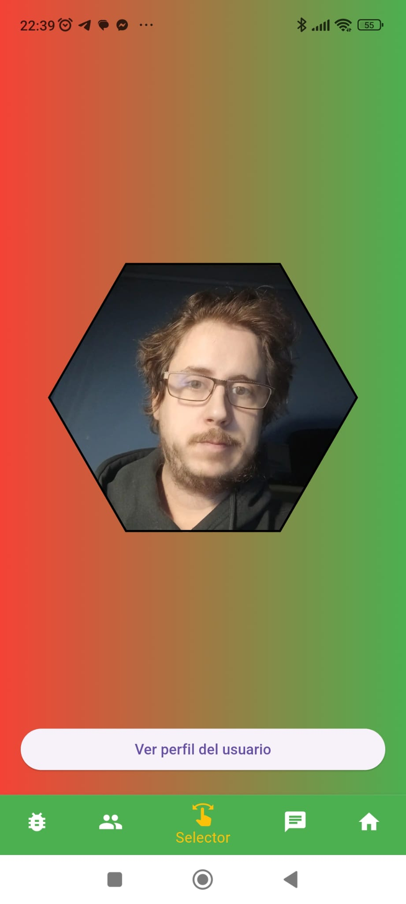
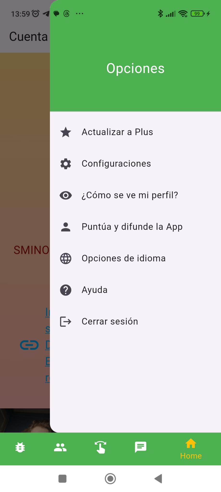

Guida pratica di Sminos
Sminos è un'applicazione di social media disponibile su Google Play progettata per condividere immagini, testo, link e posizioni in modo visivamente unico. Ciò che la distingue è il suo focus sulla presentazione dei profili in un formato a nido d'ape, che rende l'esperienza interessante, intuitiva e diversa dalle piattaforme tradizionali. Di seguito ti fornisco tutto ciò che devi sapere per iniziare a usare Sminos:
Caratteristiche principali di Sminos
- Design del profilo con esagoni
- I profili sono organizzati in un nido d'ape esagonale, dove puoi aggiungere molteplici immagini.
- Ogni immagine che carichi diventa un esagono nel tuo profilo, conferendogli una struttura visiva moderna e attraente.
- Il nido d'ape non solo riflette i tuoi post, ma ti collega anche visivamente con altri utenti della piattaforma.
- Condividi diversi tipi di contenuti
- Puoi condividere più di immagini:
- Testo per esprimerti o dare contesto.
- Link a pagine esterne o risorse.
- Posizioni per mostrare luoghi importanti o interessanti.
- Esplora i profili di altri utenti
- Se un profilo ti attira nel nido d'ape, puoi cliccare per vedere più dettagli su quella persona ed esplorare il suo contenuto più a fondo.
- Questo favorisce connessioni basate su interessi comuni e su ciò che ogni utente decide di mostrare.
- Interazione con altri utenti
- Sebbene l'attenzione principale sia sui contenuti visivi e sulle informazioni che condividi, puoi interagire con altri profili attraverso il design intuitivo dell'app.
- Componenti gratuiti e a pagamento
- Sminos è principalmente gratuito, ma include opzioni a pagamento che possono migliorare la tua esperienza (come funzioni premium o vantaggi aggiuntivi). Sminos Plus ti permette di navigare senza annunci, creare immagini con IA e permette di mettere più di un tipo di contenuto, cioè mettere più di 1 testo, più di una posizione o più di un link.
Come iniziare a usare Sminos
- Scarica l'app
- Vai su Google Play e cerca "Sminos". Scaricala e installala sul tuo dispositivo Android.
- Crea il tuo profilo
- Una volta installato, crea il tuo account. Potrai configurare il tuo profilo aggiungendo immagini, testo e altri elementi che rappresentano chi sei.
- Assicurati di aggiungere immagini interessanti, poiché queste formeranno gli esagoni nel tuo nido d'ape.
- Esplora il nido d'ape globale
- All'ingresso, troverai una rete visiva di esagoni che rappresentano i profili di altri utenti.
- Esplora liberamente, connettiti con chi ti interessa e goditi il contenuto.
- Pubblica contenuti
- Condividi immagini, link, posizioni o testo nel tuo profilo.
- Tutto ciò che pubblichi farà parte del tuo nido d'ape personale e sarà visibile agli altri utenti.
Consigli per sfruttare al massimo Sminos
- Fai attenzione alla tua selezione di immagini
- Le immagini sono la base del tuo profilo. Caricare contenuti visivi accattivanti può aiutarti a distinguerti nel gruppo.
- Sii strategico con i link e le posizioni
- Se condividi link, assicurati che siano rilevanti per il tuo pubblico.
- Usa la funzione di localizzazione per evidenziare luoghi interessanti o legati alla tua vita.
- Esplora e connettiti
- La piattaforma è progettata per facilitare le scoperte. Non esitare a esplorare altri profili e connetterti con persone che condividono i tuoi interessi.
Come usare l'applicazione
Una volta effettuato l'accesso, ci sono 5 schede inferiori:
- Alveare: La prima scheda inferiore mostra l'alveare con tutti gli utenti. C'è un pulsante di aggiornamento nell'angolo in basso a sinistra per ricaricare gli utenti dell'alveare in modo casuale

I pulsanti a sinistra e a destra a forma di freccia servono per andare alla schermata del sondaggio sull'emoticon che rappresenta l'emozione degli utenti in un dato momento

- Amici: La seconda scheda inferiore è quella degli amici, simile alla prima, ma qui vengono mostrati solo gli utenti che stai seguendo perché ti interessano.

In questa scheda c'è anche il sondaggio quando si preme sulle schede laterali, ma la percentuale si applica solo sugli utenti che segui.
In entrambe le schede (Alveare e Amici), quando si preme su un esagono, viene mostrato il profilo completo di quell'utente.

- Selettore: Nella terza scheda inferiore c'è un selettore per distinguere le immagini che ti piacciono da quelle che non ti piacciono, con tutte le foto di tutti gli utenti. Se l'esagono scivola verso sinistra significa che non ti piace, se scivola verso destra significa che ti piace.

- Chat: Nella quarta scheda inferiore c'è la Chat, dove viene visualizzato l'elenco di tutte le chat e si può entrare in ciascuna di esse. Nella chat è possibile condividere un messaggio di testo, un'immagine, un video o anche un messaggio vocale. Le chat non lette vengono contrassegnate in verde

- Account: Nella quinta scheda inferiore c'è l'account, dove puoi configurare il profilo per mostrarlo agli altri utenti e ci sono le schermate di configurazione. Viene mostrato l'esagono con le immagini che l'utente ha caricato in ordine casuale. Il pulsante + sotto l'esagono serve per aggiungere contenuti alla pagina del profilo, da lì puoi aggiungere un link (per far sì che il link con un titolo vada alla sua URL se un altro utente ci clicca sopra). Questo serve per promuovere qualcosa che l'utente vuole fornire. Inoltre, dal pulsante più puoi aggiungere del testo al profilo o una posizione per far conoscere una posizione particolare. Nel piano gratuito di Sminos è possibile aggiungere solo un contenuto per tipo, ma se hai la versione Plus puoi aggiungere più tipi di ciascuno.

Per aggiungere immagini al proprio profilo ci sono 3 possibilità che sono rappresentate nei pulsanti flottanti nell'angolo in basso a destra.
Il pulsante flottante in basso a destra, di colore verde, serve per caricare un'immagine dalla libreria del telefono, quello a destra in basso serve per scattare una foto direttamente con la fotocamera. E il pulsante sopra questo serve per creare immagini con intelligenza artificiale e è disponibile solo se sei un abbonato a Sminos Plus.
Quando aggiungi una nuova immagine, qualsiasi sia il metodo, puoi accompagnarla con un testo, questa immagine potrà ricevere like sia con il selettore che quando un altro utente interagisce con il profilo.
Sezione Opzioni:
Nella parte superiore destra di questa scheda (Account) ci sono 3 puntini, cliccando su di essi si apre un drawer per effettuare diverse configurazioni o ottenere informazioni sull'utente.

Opzioni del lato della pagina Account:
- Aggiorna a Plus
- In questa sezione puoi aggiornare a Plus, ci sono due tipi di abbonamenti, mensile o annuale, l'annuale è proporzionalmente più economico.

- Impostazioni
- In questa sezione è possibile cambiare il nome utente, il colore di sfondo del gradiente superiore, il colore di sfondo del gradiente inferiore, il colore del testo e la velocità di cambio delle immagini. Inoltre, da qui l'utente può eliminare il proprio account se lo desidera.

- Come vedo il mio profilo?
- In questa sezione l'utente può vedere come appare il proprio profilo dalla colmena degli altri utenti. Non è possibile interagire con se stessi.
- Valuta e diffondi l'app
- In questa sezione l'utente può accedere al Play Store per valutare e diffondere l'app tramite WhatsApp.

- Opzioni lingua
- In questa sezione è possibile selezionare la lingua per tutta l'applicazione. È possibile scegliere tra i seguenti linguaggi: Spagnolo, Inglese, Francese, Portoghese, Italiano o Catalano.

- Aiuto
- Questa è la sezione in cui si trova la guida dell'app e un agente vocale per risolvere qualsiasi dubbio.
- Disconnettersi
- Questo pulsante serve per disconnettersi dall'app e uscire dalla modalità login.
FAQ
- Cosa devo fare prima di accedere all'app?
- È importante caricare foto e contenuti sul proprio profilo per garantire la qualità dell'app. In caso contrario, gli utenti che non configurano il loro profilo o fanno un cattivo uso dell'app verranno eliminati.
- Se accedo con email invece che con il provider Gmail, cosa devo fare?
- È importante che, se accedi con email e password, verifichi la tua email. Sul tuo profilo comparirà un pulsante che dice "Verifica email", cliccandolo invierà una mail per verificare l'email. Un account non verificato non verrà mostrato nella colmena.
- Come caricare foto?
- Premi uno dei pulsanti flottanti della scheda Account, come quello per caricare dalla galleria, per fare una foto direttamente o per creare un'immagine con IA (disponibile solo in Plus).
- Se sono abbonato a Plus, come posso verificarlo?
- Vai alla sezione abbonamenti e iscriviti o, se sei già abbonato, aspetta che il sistema lo aggiorni. Se hai problemi con questo, assicurati di avere l'ultima versione installata.
Quali vantaggi ha Sminos Plus?
- Contenuti senza annunci, creazione di immagini con IA e più di un tipo di blocco di contenuti per il profilo.
Chi può vedere il mio profilo?
- Tutti coloro che hanno l'app, ideale per farti conoscere rapidamente.
Raccomandazioni
- Avere un buon profilo curato nei colori, contenuti del profilo e immagini o fotografie.
- Diffondere l'app.
- Passare a Plus per un'esperienza migliore senza annunci e con più funzionalità.
È disponibile per IOS?
- No, ancora non lo è, ma non è escluso per il futuro.
Scarica l'applicazione
Puoi scaricare Sminos da Google Play cercando direttamente "Sminos" nel negozio di applicazioni del tuo dispositivo Android.